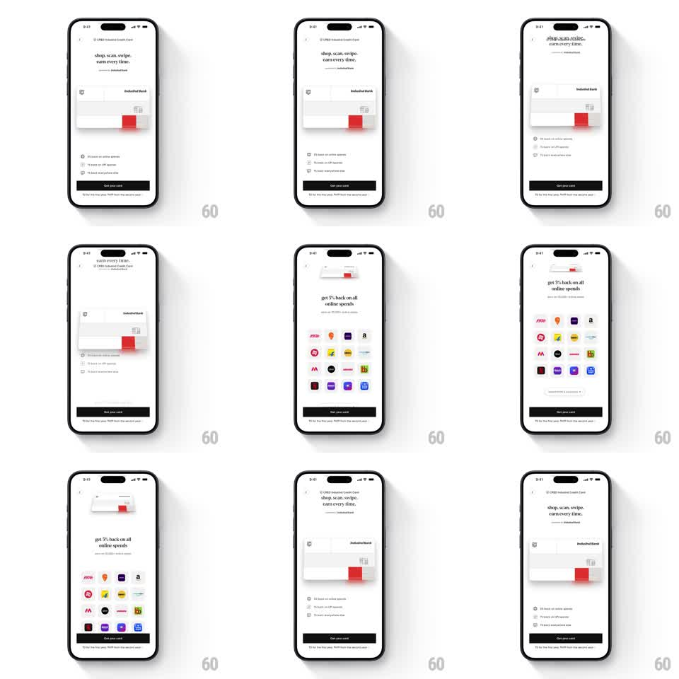

Media
Frame-by-frame

Rebuild this interaction 1:1: CRED's IndusInd card page - swipe the floating credit card and it rotates in 3D, snaps to its rest angle, and the page beneath scrolls from perks list to a brand-logo reward grid.

Rebuild this interaction 1:1: CRED's IndusInd card page - swipe the floating credit card and it rotates in 3D, snaps to its rest angle, and the page beneath scrolls from perks list to a brand-logo reward grid.
## Integration
Integration: stack-agnostic spec - springs given as stiffness/damping, timed motions as duration + curve; map every value to your framework and animation library of choice.
## Scene
CRED co-branded card page, light: "CRED IndusInd Credit Card" header, "shop. scan. swipe. earn every time." subhead, a floating white credit card with a red accent block mid-screen, a perk checklist ("5% back on online spends...") below, and a black "Get your card" button. Scrolled state: "get 5% back on all online spends" with a grid of brand logos.
## Motion spec
Pattern: 3D swipe-and-snap product card.
- Horizontal drag on the card rotates it in perspective (rotateY up to +/-25 degrees, 1:1 with drag, perspective ~800px) with a slight translateX follow and a shadow that shifts opposite the tilt.
- Release: the card snaps back to 0 degrees (spring ~350/14, one visible overshoot to -3 degrees) or, past 40% width, flicks off and returns from the other side (400ms) - a playful shuffle.
- The tilt exposes the card's edge: a thin dark side extrusion appears beyond 10 degrees of rotateY.
- Page scroll underneath is separate but synchronized in feel: as content scrolls to the logo grid, the card scales down slightly (1 -> 0.92) and its float loop pauses.
- Idle: the card floats (translateY +/-4px, 3s) with a faint sheen sweep every 5s.
## Calibration
- The card feels like rigid plastic - fast response, minimal wobble, single overshoot on snap.
- The red accent block stays perfectly crisp at all angles; no texture blur.
## Reduced motion
Card tilts to +/-8 degrees max and eases back (200ms); no flick-off.
## Don't miss
- The shadow is part of the physics: it slides and softens as the card tilts, never static.
- The perk checklist ticks draw on (check strokes, 60ms stagger) the first time they enter view.